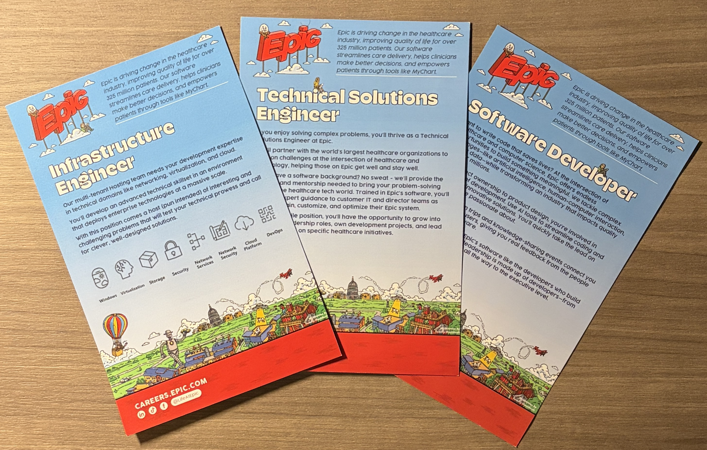
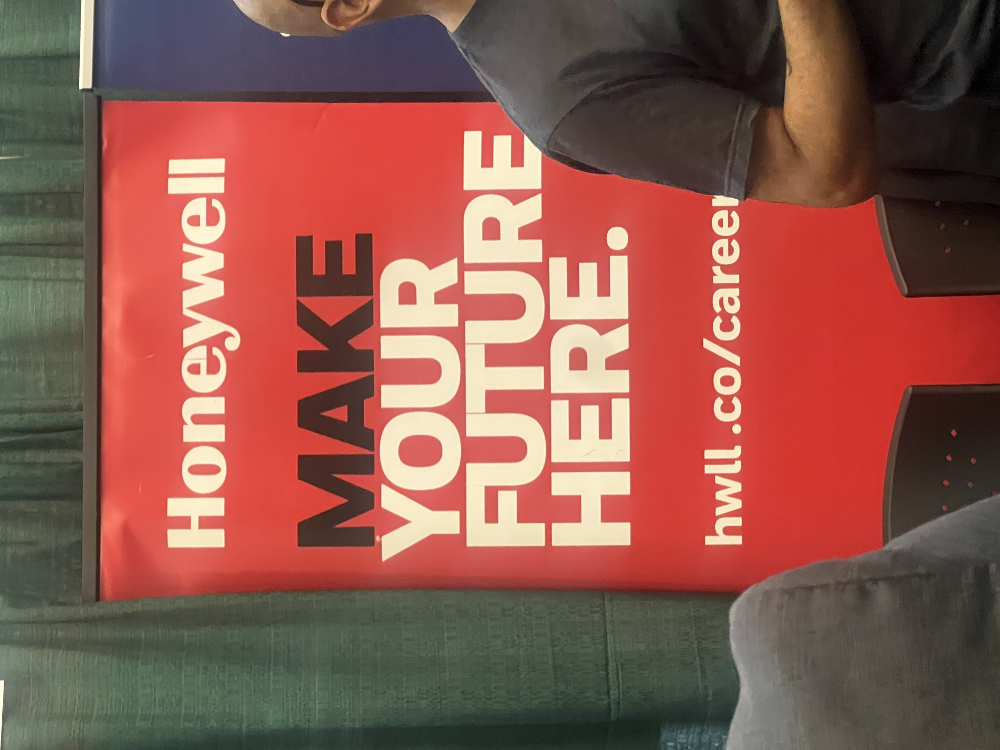
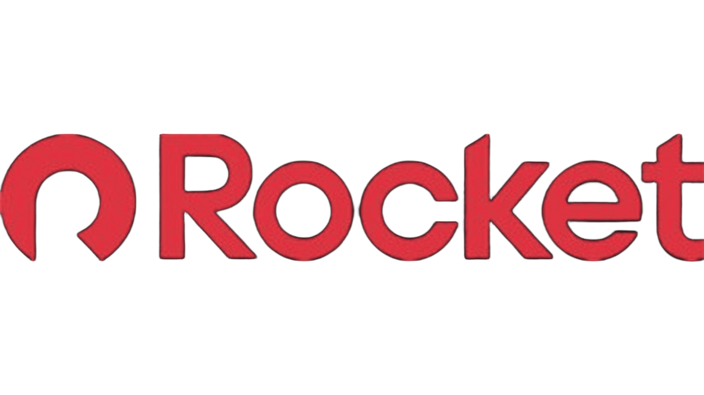
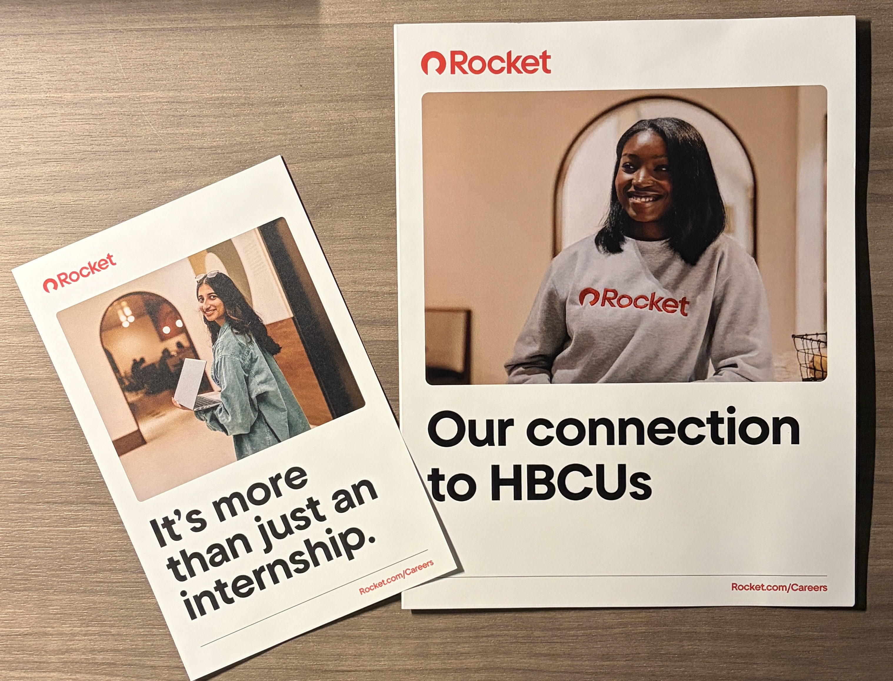

Introduction
The purpose of this website is to inform people about the three companies I spoke with. I will talk about the many jobs available at each company and some interesting facts I learned from the recruiters. Throughout this webpage, I hope to expand readers’ knowledge of Epic, Rocket, and Honeywell and explain why I chose to speak with these companies.


Epic
Epic is a healthcare software company known for creating many of the electronic health record systems used in hospitals and doctors’ offices. They also created MyChart, a patient portal that allows patients to view their medical records and appointments and communicate with their doctors.
Unique Information
Something unique I learned about Epic is that the company typically hires juniors and seniors for full-time roles. Most of these positions are in Wisconsin and offer relocation support if needed. I also did not know that Epic created MyChart. Learning this helped me understand just how large the company is and how many different healthcare systems run on their software.
Key Takeaways
I learned about three roles that they offer that align with my career goals. I was assisted by the recruiter, who recommended that I pursue a career as a Technical Solutions Engineer, an Infrastructure Engineer, or Software Developer. These roles require that I have sufficient skills in Cloud Platform, DevOps, Network Services, and Network Security. I would also be taking on challenges, including artificial intelligence, human-computer interaction, and leading development projects. Hearing this helped me better understand the different opportunities available to me within the company and how my major connects to real-world positions. It also gave me a clearer picture of the technical expectations and the types of projects I could be a part of in the future.
Epic's Career Page
Honeywell
Honeywell offers a range of automation services. They provide automation services for things like HVAC systems, warehouse operations, and industrial processes. They also place strong emphasis on safety, with various systems that detect workplace hazards.
Unique Information
Something unique I learned by talking to Honeywell is how many different industries they are in. Before speaking with them, I saw Honeywell as only another HVAC company. Also, I learned that the spring 2027 internships will open for applications in October or November.
Key Takeaways
The in-demand skills they were recruiting for included proficiency in Python or Java, debugging, SQL, troubleshooting, and customer support. Some of the roles that correlate with my major are a Software Intern, Cybersecurity Intern, or IT Intern. They are more interested in computer science majors, so I would probably not keep Honeywell at the top of my list. Although they are a large company, the recruiter informed me that they have a large number of positions I could align with based on what the person reviewing my application sees. With that in mind, it is not a bad place for me to start my career.
Honeywell's Career Page

Rocket
Rocket is a company within the larger Rocket Companies group. Rocket has many family companies under it, which give it a wide range of job opportunities. Some of the companies include Rocket Mortgage, Rocket Homes, and Rocket Money.
Unique Information
Something unique I learned about Rocket was that many of its employees are African American or Black, including those in higher-ranking positions. In addition to that information, it was a shock to hear that they also owned StockX. As previously, I only knew about Rocket Money and Rocket Mortgage. I was also told by the recruiter that they offer relocation for their internships, where they will provide a lot of what I need to do my best on the job.
Key Takeaways
I learned about the many opportunities available to me, as Rocket recruits from 17 different companies, according to a 2024 report. They also hire more than 450 interns each year, so the opportunities are there. I will have to apply myself for these roles to be available to me. However, for most roles that match my major, the skills that they look for include C#, Python, React, SQL, AWS, and JavaScript/TypeScript. Also, the recruiter informed me that they regularly hire first-year students for internships, which gave me the much-needed motivation to apply for a possible internship this summer. I was very pleased with my conversation with Rocket, and I hope to learn more about the company for my future career.
Rocket's Career PageReflection
Through my conversations with Epic, Honeywell, and Rocket, I got a clear understanding of the skills and roles that aligned with my career goals. Epic introduced me to positions such as Technical Solutions Engineer, Infrastructure Engineer, and Software Developer. All of these require me to build foundations in cloud platforms, DevOps, networking, and security. However, Honeywell tends to prioritize computer science majors. I learned that they still offer a wide range of roles that could match my background. Rocket stood out for its big internship program and willingness to hire first-year students, as well as the programming skills they value, including C#, Python, React, SQL, AWS, and JavaScript/TypeScript. Overall, these conversations helped me better understand the expectations of entering the tech industry, the skills I need to improve, and the opportunities available to me as I continue building my career path.